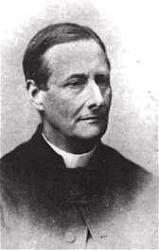
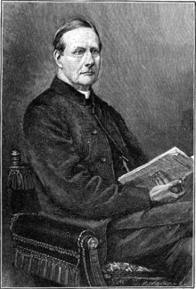

|
|
颂主新歌 |
|
1 Now the day is over, 2 Jesus, give the weary 3 Comfort ev'ry suff'rer 4 Thro' the long night-watches 5 When the morning wakens, |
1.白天刚才过去，黑夜临眼前， |
|
https://www.mred365.cn/szxg/7042.html
https://hymnary.org/hymn/WASH1957/page/121
|
|
|
|
|


Now The Day Is Over - Robert Shaw Chorale https://youtu.be/jLu0H_5qmkQ -
Now the Day is Over By Sabine Baring-Gould, 1865
https://youtu.be/Ll1sxSPhd3E -
Lyrics with Orchestral Music For Worship Hymn / Song : - Now The Day Is
Over.
https://youtu.be/qJbN3gJzRIk -
Now the Day Is Over · Michael Crawford
https://youtu.be/Fd7ZAeIsy5U
| Text: | Now the Day Is Over |
| Author: | Sabine Baring-Gould, 1834-1924 |
| Tune: | MERRIAL |
| Composer: | Joseph Barnby, 1838-1896 |
| Short Name: | S. Baring-Gould |
| Full Name: | Baring-Gould, S. (Sabine), 1834-1924 |
| Birth Year: | 1834 |
| Death Year: | 1924 |
Baring-Gould, Sabine,

M.A., eldest son of Mr. Edward Baring-Gould, of Lew Trenchard, Devon, b. at Exeter, Jan. 28, 1834, and educated at Clare College, Cambridge, B.A. 1857, M.A. 1860. Taking Holy Orders in 1864, he held the curacy of Horbury, near Wakefield, until 1867, when he was preferred to the incumbency of Dalton, Yorks. In 1871 he became rector of East Mersea, Essex, and in 1881 rector of Lew Trenchard, Devon. His works are numerous, the most important of which are, Lives of the Saints, 15 vols., 1872-77; Curious Myths of the Middle Ages, 2 series, 1866-68; The Origin and Development of Religious Belief, 2 vols., 1869-1870; and various volumes of sermons. His hymns, original and translated, appeared in the Church Times; Hymns Ancient & Modern, 1868 and 1875; The People's Hymnal, 1867, and other collections, the most popular being "Onward, Christian soldiers," "Daily, daily sing the praises," the translation "Through the night of doubt and sorrow," and the exquisite Easter hymn, "On the Resurrection Morning."
His latest effort in hymnology is the publication of original Church Songs, 1884, of which two series have been already issued. In the Sacristy for Nov. 1871, he also contributed nine carols to an article on "The Noels and Carols of French Flanders.” These have been partially transferred to Chope's and Staniforth's Carol Books, and also to his Church Songs.
--John Julian, Dictionary of Hymnology (1907)
Tune Information
| Title: | MERRIAL (Barnby) |
| Composer: | Joseph Barnby (1868) |
| Meter: | 6.5.6.5 |
| Incipit: | 55555 56656 76111 |
| Key: | A Major |
| Copyright: | Public Domain |
| Short Name: | Joseph Barnby |
| Full Name: | Barnby, Joseph, 1838-1896 |
| Birth Year: | 1838 |
| Death Year: | 1896 |
Joseph Barnby (b. York, England, 1838; d. London, England, 1896)

An accomplished and popular choral director in England, Barby showed his musical genius early: he was an organist and choirmaster at the age of twelve. He became organist at St. Andrews, Wells Street, London, where he developed an outstanding choral program (at times nicknamed "the Sunday Opera"). Barnby introduced annual performances of J. S. Bach's St. John Passion in St. Anne's, Soho, and directed the first performance in an English church of the St. Matthew Passion. He was also active in regional music festivals, conducted the Royal Choral Society, and composed and edited music (mainly for Novello and Company). In 1892 he was knighted by Queen Victoria. His compositions include many anthems and service music for the Anglican liturgy, as well as 246 hymn tunes (published posthumously in 1897). He edited four hymnals, including The Hymnary (1872) and The Congregational Sunday School Hymnal (1891), and coedited The Cathedral Psalter (1873).
Bert Polman
颂主新歌 039黑夜来临
我必安然躺下睡觉，因为独有祢耶和华使我安然居住。（ 诗 4:8 ）
在现代的生活中，许多人的心灵难得有一刻是安静的，好像人们都觉得忙碌不停的生活，才是充实和有意义。然而心灵缺乏安静，却是生命的一大危机，因为当心灵疲乏不振时，我们就没有能力去控制一些外来的压力，或是内发的私慾。白天坐立不安，晚上无法入睡。
一个能「安然躺下睡觉」的人真是有福的，这种福气惟有耶和华神能够赐下。经上说「恶人必不得平安」（ 赛 48:22
），但基督徒藉耶稣已与神和好，因此独有耶和华可使我们安然居住。
今天你是否落在困苦的日子中？或者彷彿在四面楚歌的境况中？被生活的重担压抑，力不能胜，夜夜失眠？那麽，你当将一切忧虑卸给神（ 彼前 5:7
），就能因倚靠神而享安睡。
本诗是一首晚祷歌，是作者为主日学儿童写的。根据箴言 3:24「你躺下，必不惧怕。你躺卧，睡得香甜。」为基础而作。首次出现于 1865 年 2 月 16 日的
Church Time 杂志上。
作者 Sabine Baring-Gould 1834 年 1 月 28 日生于英国 Exeter
係出自贵族之家，早期在德国和法国留学。后来成为英国最着名的多产作家，其作品甚广，包括历史、传记、诗词、小说及英国民谣的拓荒者。
大英图书馆目录列出他的书目较同期的作家还要多。他也是名诗「基督精兵」的作者。
Sabine Baring-Gould 1834 –1924
|
Sabine Baring-Gould
|
|
|---|---|
|

Sabine Baring-Gould, engraving published in Strand
Magazine, from a photograph by Downey (died 1881)
|
|
| Born |
28 January 1834 |
| Died |
2 January 1924 (aged 89) |
| Nationality | British |
| Alma mater | Clare College, Cambridge |
| Occupation | Anglican priest, hagiographer, antiquarian, novelist, folk song collector and eclectic scholar |
{kind=link}
Sabine Baring-Gould (/ˈseɪbɪn ˈbɛərɪŋ ˈɡuːld/ SAY-bin BAIR-ing GOOLD; 28 January 1834 – 2 January 1924) of Lew Trenchard in Devon, England, was an Anglican priest, hagiographer, antiquarian, novelist, folk song collector and eclectic scholar. His bibliography consists of more than 1,240 publications, though this list continues to grow. His family home, the manor house of Lew Trenchard, near Okehampton, Devon, has been preserved as he had it rebuilt and is now a hotel. He is remembered particularly as a writer of hymns, the best-known being "Onward, Christian Soldiers",[1] "Sing Lullaby", and "Now the Day Is Over". He also translated the carol "Gabriel's Message" from the Basque language to English.
Origins[edit]
{kind=link}
{kind=link}
Sabine Baring-Gould was born in the parish of St Sidwell, Exeter, on 28 January 1834.[3] He was the eldest son and heir of Edward Baring-Gould (1804–1872), lord of the manor of Lew Trenchard, a Justice of the Peace and Deputy Lieutenant of Devon, formerly a lieutenant in the Madras Light Cavalry (resigned 1830), by his first wife, Sophia Charlotte Bond, daughter of Admiral Francis Godolphin Bond, Royal Navy.[4] Sabine's paternal grandfather was William Baring (died 1846), JP, DL, who in 1795 had assumed by royal licence the additional surname and arms of Gould, in accordance with the terms of his inheritance of the manor of Lew Trenchard from his mother Margaret Gould, daughter and eventual heiress in her issue of William Drake Gould (1719–1767) of Lew Trenchard. The Gould family was descended from a certain John Gold, a crusader present at the siege of Damietta in 1217 who for his valour was granted in 1220 by Ralph de Vallibus an estate at Seaborough in Somerset.[4] Margaret Gould was the wife of Charles Baring (1742–1829) of Courtland in the parish of Exmouth, Devon, whose monument survives in Lympstone Church, 4th son of Johann Baring (1697–1748), of Larkbeare House, Exeter, a German immigrant apprenticed to an Exeter wool merchant, and younger brother of Francis Baring (1740–1810), and John Baring (1730–1816) of Mount Radford, Exeter, which latter two established the London merchant house of John and Francis Baring Company, which eventually became Barings Bank.
Sabine was named after the family of his grandmother, Diana Amelia Sabine (died 1858), wife of William Baring-Gould (died 1846), daughter of Joseph Sabine of Tewin, Hertfordshire and sister of the Arctic explorer General Sir Edward Sabine.[5][6][7]
Career[edit]
{kind=link}
{kind=link}
Because the family spent much of his childhood travelling round Europe, most of his education was by private tutors. He only spent about two years in formal schooling, first at King's College School in London (then located in Somerset House) and then, for a few months, at King's School, Warwick (now Warwick School). Here his time was ended by a bronchial disease of the kind that was to plague him throughout his long life. His father considered his ill-health as a good reason for another European tour.
In 1852 he was admitted to Cambridge University, earning the degrees of Bachelor of Arts in 1857, then Master of Arts in 1860 from Clare College, Cambridge.[8] In September 1853 he informed Nathaniel Woodard of his desire to be ordained. He taught for only ten days at one of Woodard's boys' boarding schools in Sussex, Lancing College, but then moved to another, Hurstpierpoint College, where he stayed from 1857 to 1864.[9] While there he was responsible for several subjects, especially languages and science, and he also designed the ironwork of the bookcases in the boys' library, as well as painting the window jambs with scenes from the Canterbury Tales and The Faerie Queene.[10]
He took Holy Orders in 1864,[11] and became the curate at Horbury Bridge, West Riding of Yorkshire. It was while acting as a curate that he met Grace Taylor, the daughter of a mill hand, then aged fourteen. In the next few years they fell in love. His vicar, John Sharp, arranged for Grace to live for two years with relatives in York to learn middle-class manners. Baring-Gould, meanwhile, relocated to become perpetual curate at Dalton, near Thirsk. He and Grace were married in 1868 at Wakefield.[12][13] Their marriage lasted until her death 48 years later, and the couple had 15 children, all but one of whom lived to adulthood. When he buried his wife in 1916 he had carved on her tombstone the Latin motto Dimidium Animae Meae ("Half my Soul").
Baring-Gould became the rector of East Mersea in Essex in 1871 and spent ten years there. In 1872 his father died and he inherited the 3,000-acre (1,200 ha) family estates of Lewtrenchard in Devon, which included the gift of the living of Lew Trenchard parish. When the living became vacant in 1881, he was able to appoint himself to it, becoming parson as well as squire. He did a great deal of work restoring St Peter's Church, Lew Trenchard, and (from 1883 to 1914) thoroughly remodelled his home, Lew Trenchard Manor.
Folk songs[edit]
|
|
Baring-Gould regarded his principal achievement to be the collection of folk songs that he made with the help of the ordinary people of Devon and Cornwall. His first book of songs, Songs and Ballads of the West (1889–91), was published in four parts between 1889 and 1891. The musical editor for this collection was Henry Fleetwood Sheppard, though some of the songs included were noted by Baring-Gould's other collaborator Frederick Bussell.
Baring-Gould and Sheppard produced a second collection named A Garland of Country Songs during 1895. A new edition of Songs of the West was proposed for publication in 1905. Sheppard had died in 1901, and so the folk song collector Cecil Sharp was invited to undertake the musical editorship for the new edition. Sharp and Baring-Gould also collaborated on English Folk Songs for Schools during 1907. This collection of 53 songs was widely used in British schools for the next 60 years.
Although he had to modify the words of some songs which were too rude for the time, he left his original manuscripts for future students of folk song, thereby preserving many beautiful pieces of music and their lyrics which might otherwise have been lost.
Baring-Gould gave the fair copies of the folk songs he collected, together with the notebooks he used for gathering information in the field, to Plymouth Public Library in 1914. They were deposited with the Plymouth and West Devon Record Office in 2006. These, together with the folk-song manuscripts from Baring-Gould's library discovered at Killerton in 1998, were published as a microfiche edition in 1998. In 2011 the complete collection of his folk-song manuscripts, including two notebooks not in the microfiche edition, were digitised and published online by the Devon Tradition Project managed by Wren Music[14] in association with the English Folk Dance and Song Society as part of the "Take Six" project undertaken by the Vaughan Williams Memorial Library. It now forms part of the VWML's "Full English" website. Thirty boxes of additional manuscript material on other topics (the Killerton manuscripts) are kept in the Devon History Centre in Exeter.
Cecil Sharp dedicated his book English Folk Song: Some Conclusions (1907) to Baring-Gould.
Literature[edit]
Baring-Gould wrote many novels, including The Broom-Squire set in the Devil's Punch Bowl (1896), Mehalah: a story of the salt marshes (1880),[15] Guavas the Tinner (1897),[16] the 16-volume The Lives of the Saints, and the biography of the eccentric poet-vicar of Morwenstow, Robert Stephen Hawker. He also published nearly 200 short stories in assorted magazines and periodicals.[17] Many of these short stories were collected together and republished as anthologies, such as his Book of Ghosts (1904), Dartmoor Idyllys (1896), and In a Quiet Village (1900). His folkloric studies resulted in The Book of Were-Wolves (1865), one of the most frequently cited studies of lycanthropy. He habitually wrote while standing, and his desk can be seen in the manor.
One of his most enduringly popular works was Curious Myths of the Middle Ages,[18] first published in two parts during 1866 and 1868, and republished in many other editions since then. "Each of the book's twenty-four chapters deals with a particular medieval superstition and its variants and antecedents," writes critic Steven J. Mariconda.[19] H. P. Lovecraft termed it "that curious body of medieval lore which the late Mr. Baring-Gould so effectively assembled in book form."[20]
He wrote much about the West Country: his works of this topic include:
- A Book of the West. 2 vols. I: Devon; II: Cornwall. London : Methuen, 1899
- Cornish Characters and Strange Events. London: John Lane, 1909 (reissued in 1925 in 2 vols., First series and Second series)
- Devonshire Characters and Strange Events.
Baring-Gould served as president of the Royal Institution of Cornwall for ten years from 1897.[21]
Dartmoor[edit]
Baring-Gould, along with his friend Robert Burnard, organised the first scientific archaeological excavations of hut-circles on Dartmoor at Grimspound during 1893. They then asked R. N. Worth, R. Hansford Worth, W. A. G. Gray and a Dr Prowse[who?] to assist them with further investigations. This resulted in the formation of the Committee of the Devonshire Association for the exploration of Dartmoor.[22] Baring-Gould was the secretary and author of the first ten annual reports until 1905. The Dartmoor Exploration Committee performed many archaeological digs of prehistoric settlements on Dartmoor and systematically recorded and in some cases restored prehistoric sites. The current state of many prehistoric stone rows and stone circles on Dartmoor owes much to the work of Sabine Baring-Gould and Robert Burnard and the Dartmoor Exploration Committee. Baring-Gould was president of the Devonshire Association for the year 1896.[23]
He wrote much about Dartmoor: his works of this topic include:
- Dartmoor idylls (1896)
- A Book of Dartmoor (1900), London : Methuen, 1900. Republished Halsgrove, 2002
Family[edit]
He married Grace Taylor on 25 May 1868 at Horbury. They had 15 children: Mary (born 1869), Margaret Daisy (born 1870, an artist who painted part of the screen in Lew Trenchard Church), Edward Sabine (born 1871), Beatrice Gracieuse (1874–1876, aged 2 years), Veronica (born 1875), Julian (born 1877), William Drake (born 1878), Barbara (born 1880), Diana Amelia (born 1881), Felicitas (baptised 1883), Henry (born 1885), Joan (born 1887), Cecily Sophia (born 1889), John Hillary (born 1890), and Grace (born 1891).
His wife Grace died in April 1916, and he did not remarry; he died on 2 January 1924 at his home at Lew Trenchard and was buried next to his wife.
He wrote two volumes of memoirs: Early Reminiscences, 1834–1864 (1923) and Further Reminiscences, 1864–1894 (1925).
One grandson, William Stuart Baring-Gould, was a noted Sherlock Holmes scholar who wrote a fictional biography of the great detective—in which, to make up for the lack of information about Holmes's early life, he based his account on the childhood of Sabine Baring-Gould. Sabine himself is a major character of Laurie R. King's Sherlock Holmes novel The Moor, a Sherlockian pastiche. In this novel it is revealed that Sabine Baring-Gould is the godfather of Sherlock Holmes.
Radio actor Robert Burnard was also his grandson, and comedian Josh Widdicombe is a distant descendant. [24]
https://en.wikipedia.org/wiki/Sabine_Baring-Gould
Words: Sabine Baring-Gould (b. Jan. 28, 1834; d. Jan. 2,
1924)
Music: Merrial, by Joseph Barnby (b. Aug. 12, 1838; d. Jan.
28, 1896)
Links:
Wordwise Hymns
The Cyber
Hymnal
Hymnary.org
Note: This lovely 1867 hymn originally had eight stanzas, though most hymnals omit some of these. The Wordwise Hymns link provides biographical information on Sabine Baring-Gould, and on Joseph Barnby as well. (January 28th, the date of Baring-Gould’s birth and Barnby’s death, is a link between them). I’ve come to appreciatethe latter as a fine tune-smith.
CH-1) Now the day is over,
Night is drawing nigh,
Shadows of the evening
Steal across the sky.
CH-3) Jesus, give the weary
Calm and sweet repose;
With Thy tenderest blessing
May mine eyelids close.
We have a number of terms for the astronomical phenomenon called sunset. (Even though we learned in school that the sun doesn’t actually do that. It’s the earth turning beneath it that brings on sundown, or nightfall.) But scientific explanations aside, most of us enjoy the glorious colours that can suffuse the sky at that time.
Our sunsets can be ravishingly beautiful, especially here in Alberta and Saskatchewan, where so much of the sky is often visible. But day’s end sometimes can have a negative connotation too. We may look back with regret on a day of failure and loss. Or we may dread the coming night, if we know we’ll be tossing restlessly on a bed of pain, or crowding anxieties.
These mixed feelings can also accompany the twilight of life, as seniors face the sometimes forbidding prospects of more intrusive physical ills, and a shrinking independence. Gloaming, to use a Scottish word, is not necessarily glorious! (More of that in a moment.)
It will be seen that most of this hymn is actually a prayer. And, as well as praying for our own needs, we ought to bring others before the throne of God in prayer, as the hymn does. It is our privilege to bring our burdens, and those of others, to the Lord. He promises that when we do we’ll find “mercy, and grace to help in time of need” (Heb. 4:16).
CH-4) Grant to little children
Visions bright of Thee;
Guard the sailors tossing
On the deep, blue sea.
CH-5) Comfort those who suffer,
Watching late in pain;
Those who plan some evil
From their sin restrain.
Baring-Gould also makes an application of the sunset to the end of life, leading to the dawning of eternal day.
CH-7) When the morning wakens,
Then may I arise
Pure, and fresh, and sinless
In Thy holy eyes.
Consider this use of the imagery for a moment. How can fallen sinners hope to stand before a holy God without sins charged against them? The answer to that is the gospel of grace. “Christ died for our sins, according to the Scriptures” (I Cor. 15:3; cf. Jn. 3:16; Eph. 1:7). At the time of His first coming, the Lord Jesus was described as “the Dayspring [Dawn] from on high” (Lk. 1:78). When a person turns to Him in faith, a new spiritual light dawns in His life (cf. II Pet. 1:19). These things being so, when we put our faith in Christ, the light of His love not only shines in us, but through us (Phil. 2:15-16; Eph. 5:8).
To put it another way, what is it that can help us face the sunset of life, and the dawning of eternity, with peace and contentment, and assured hope? The Christian answers: it is a personal relationship with the Lord Jesus Christ. The Apostle Paul summed it up succinctly in his own testimony: “To me, to live is Christ, and to die is gain” (Phil. 1:21).
Questions:
1) What are the most helpful things about the ending of day?
2) What are the most difficult things (for many) about the ending of day, and the coming of night?
https://wordwisehymns.com/2015/04/29/now-the-day-is-over/